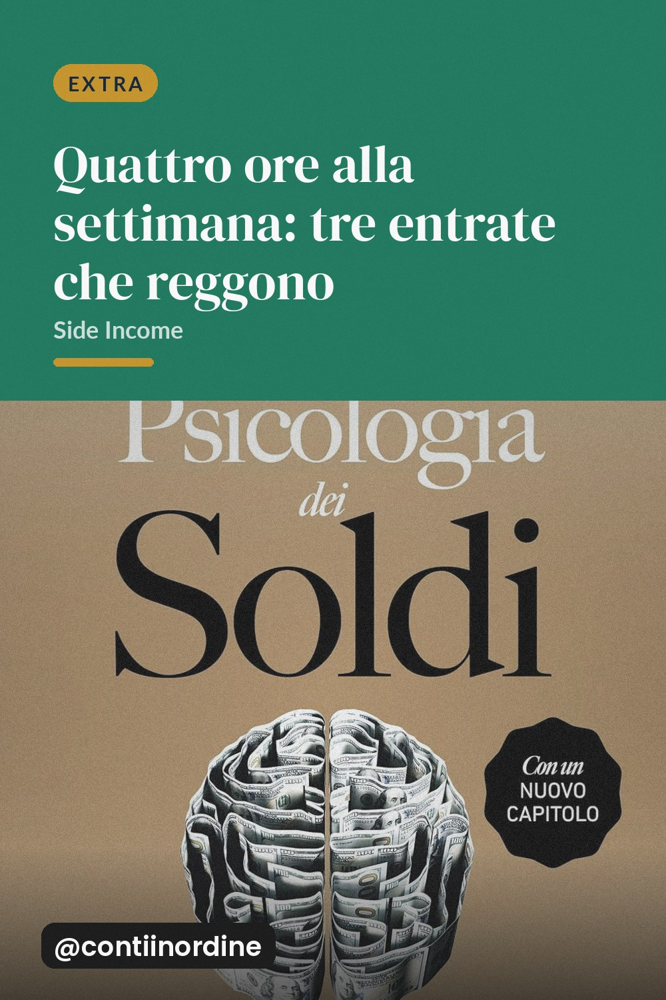
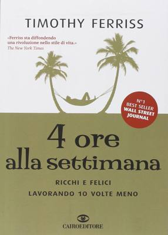

Tre vie di reddito secondario che non dipendono da follower o pubblicità, con il tempo reale che richiedono ogni settimana.

Quasi tutto quello che viene venduto come entrata secondaria ha la stessa caratteristica: funziona finché hai un pubblico. Se non hai un pubblico, non hai un canale, e senza canale non hai nulla. Esiste però un insieme più piccolo di attività che regge sulla disponibilità di ore, non sulla capacità di farsi trovare.
È la via più lenta e la più certa. Non serve un pubblico, serve un elenco. Due o tre ore al mese, in un pomeriggio, e il lavoro consiste nel fotografare, mettere un prezzo e aspettare. Il margine è più basso di quanto sembri, ma non richiede competenze nuove e il rischio è quasi nullo.
Pensate a tutto quello che gli altri rimandano per mancanza di tempo e di voglia: smontare un mobile, ritoccare un muro, portare via un divano. Non servono anni di formazione, serve un'auto, un paio di mani e la capacità di non andare via a metà. Un servizio bene descritto si vende a chi cerca, non a chi vede.
Qui il lavoro vero è di un altro tipo: trovare un cliente che ti paga ogni mese per un servizio ripetitivo. Conto un'ora al mese per fare un bilancio, montare un video, rivedere una plancia, quello che volete. È più difficile del primo, perché richiede di convincere qualcuno a fidarsi, ma poi diventa reddito fisso e non lavoro occasionale.
Il rischio di questo elenco è di fare le cose a metà. Prima di scegliere, calcola il tempo che ci metti davvero, compreso il tempo per cercare i clienti, non solo quello per lavorare. Quattro ore alla settimana di lavoro finito, per qualcuno che non ha un pubblico, diventano facilmente otto.
Il motivo per cui quasi tutti i tentativi di reddito extra falliscono non è la scelta sbagliata, è il numero di scelte. Due attività richiedono il doppio di concentrazione e la metà dei risultati, perché l'attenzione si frammenta. Scegline una, portala avanti per tre mesi, e solo dopo valuta se aggiungerne un'altra.
